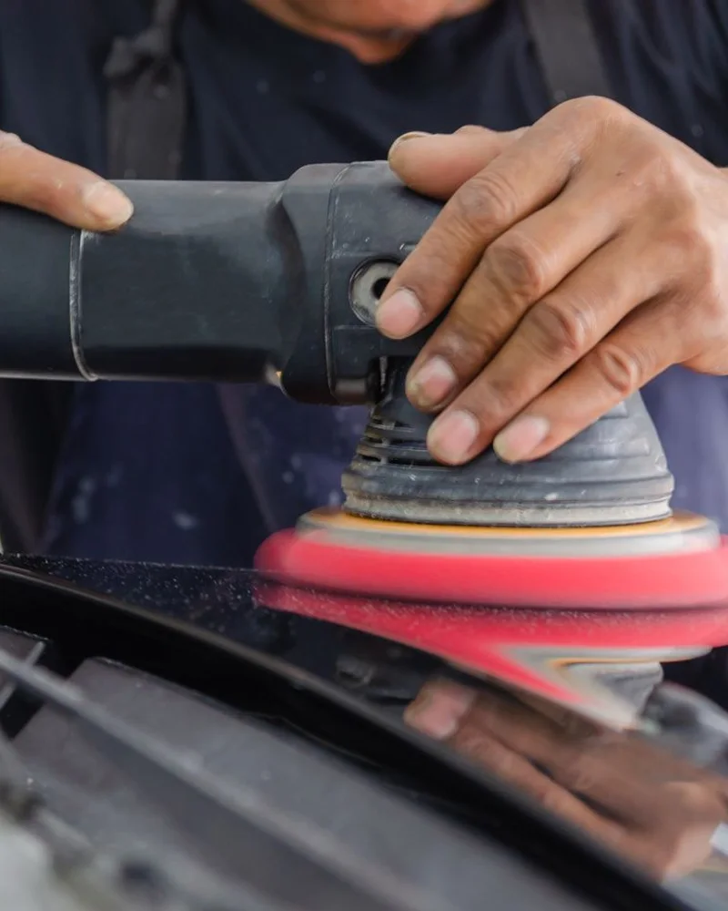
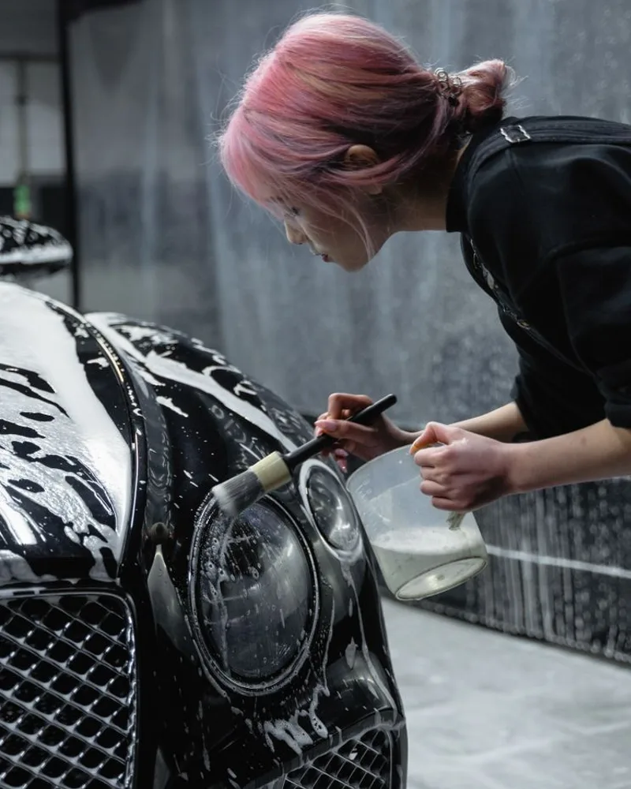
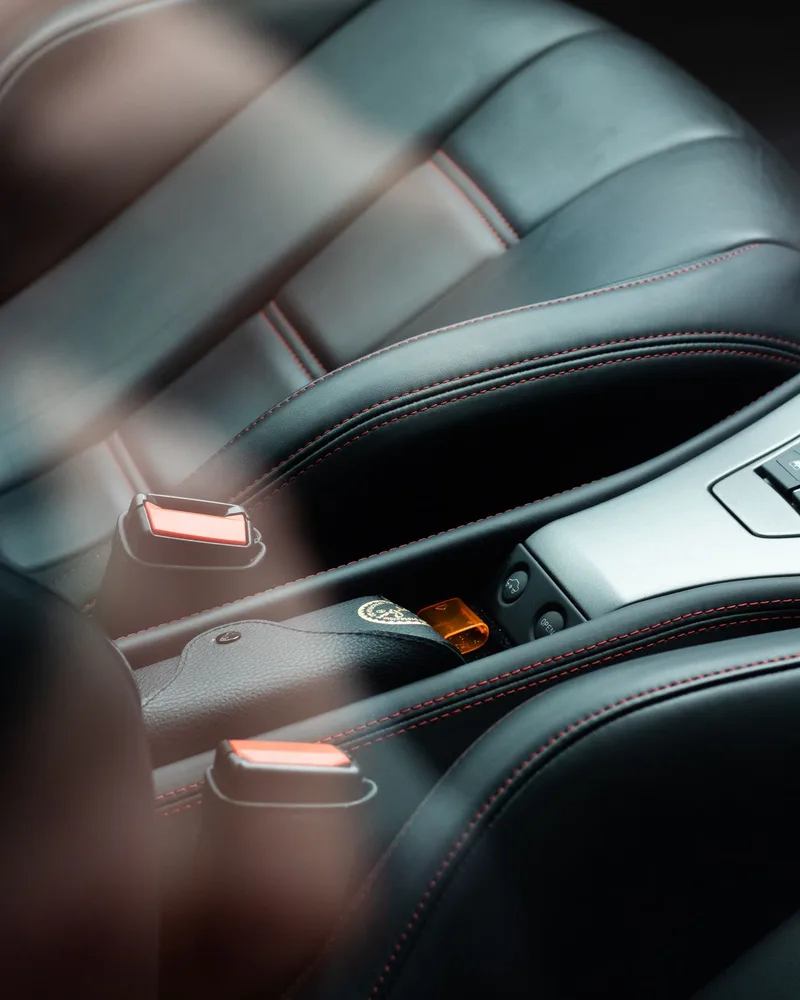
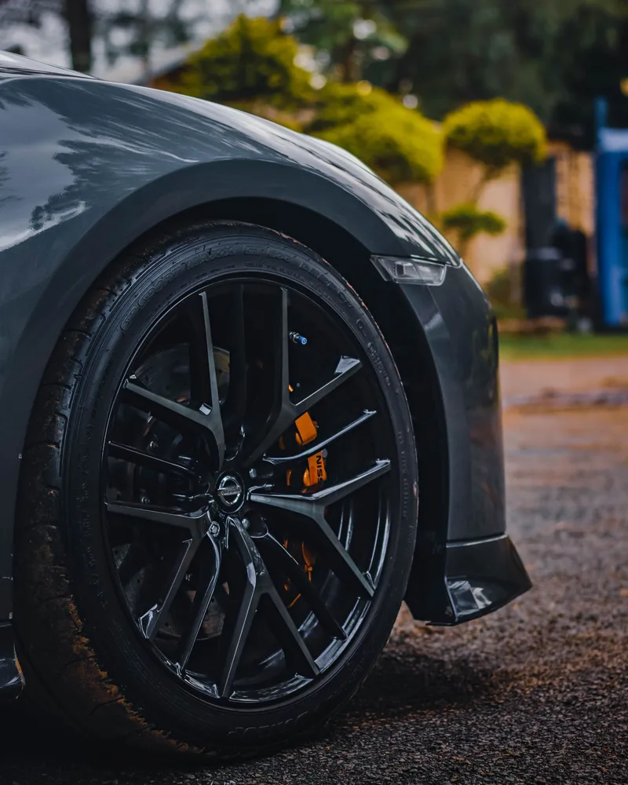
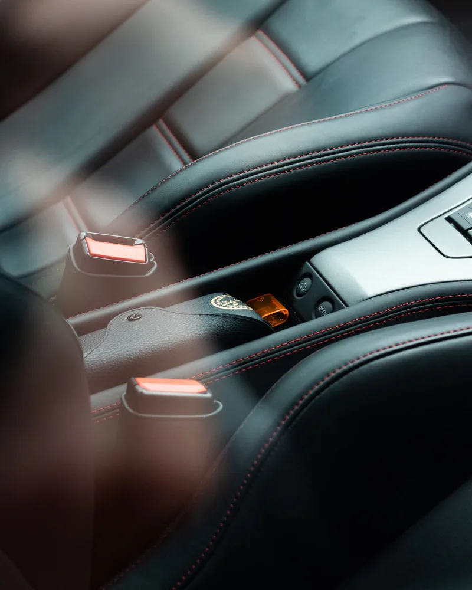
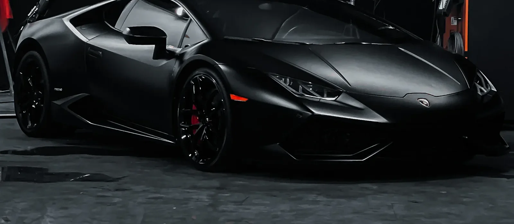

01
Polimento técnico
Análise do acabamento e correção criteriosa de imperfeições, respeitando as condições da pintura.
Explorar este cuidadoCuidado que vai além do brilho.
Técnica, precisão e respeito por cada
linha do seu automóvel.

O cuidado começa no olhar.Alguns veem um carro. Nós vemos linhas, texturas e uma história que merece ser preservada.
A NOX DETAIL é um conceito de studio automotivo em Campinas. Uma visão de cuidado que combina atenção aos materiais, execução criteriosa e sensibilidade para o que torna cada veículo único.
Conheça nossa abordagemTratamentos pensados para a superfície,
o uso e as necessidades do seu veículo.

Análise do acabamento e correção criteriosa de imperfeições, respeitando as condições da pintura.
Explorar este cuidadoPreparação e proteção compatível com cada material, para facilitar a rotina de conservação.
Explorar este cuidado
Higienização e cuidado de bancos, painéis e revestimentos com atenção à textura de cada material.
Explorar este cuidado
Limpeza técnica dos recortes, faces e áreas de difícil acesso, com produtos adequados ao acabamento.
Explorar este cuidadoAvaliação e tratamento da superfície dos faróis, conforme o estado e o tipo de material.
Explorar este cuidado
Atenção dedicada a frisos, plásticos e pequenos detalhes que completam a experiência.
Explorar este cuidadoExplore as áreas do veículo e descubra os cuidados que fazem parte da experiência NOX.
O brilho começa com a preparação. Limpeza, descontaminação e polimento são avaliados para cuidar do acabamento sem desconsiderar a integridade da pintura.
PRECISÃO EM CADA REFLEXOIncluir no meu cuidadoArraste o controle e explore a diferença visual entre um acabamento opaco e um reflexo mais definido.
Simulação de contraste sobre a mesma fotografia. Não representa um resultado real de serviço.
Arraste para comparar ← 50% →
O ponto de partida é a condição de cada veículo. Materiais e necessidades orientam o plano de cuidado.
Preparação, execução e revisão fazem parte de uma mesma intenção: tratar cada superfície com critério.
Escopo explicado e expectativas alinhadas. O cuidado também está na forma de conversar.
Uma sequência simples de entender.
Cuidadosa em cada decisão.
Entender o uso do veículo, suas expectativas e o estado de cada superfície.
Definir os tratamentos indicados, o escopo e as orientações para o atendimento.
Trabalhar com atenção aos materiais e às particularidades de cada área.
Revisar os detalhes e orientar a conservação do veículo no dia a dia.
Uma curadoria visual do universo automotivo.
Fotografias de referência, não de serviços da NOX.
6 fotografias exibidas
O Precision Map apresenta os cuidados por área do veículo. Use o simulador para organizar seus interesses. Em um atendimento real, a indicação depende de avaliação presencial dos materiais e das condições do automóvel.
Não. Profundidade, espessura e condições do acabamento precisam ser avaliadas. Algumas marcas não podem ser corrigidas com segurança por polimento. Este projeto não promete remoção total de imperfeições.
O prazo depende dos cuidados escolhidos e do estado do veículo. Em uma operação real, ele seria definido após a avaliação e antes da execução.
Não. A conservação continua dependendo do uso, da exposição e da rotina de limpeza. Cada material e produto requer orientações específicas.
Não. O gerador é uma demonstração local. Ele organiza um resumo de cuidados, sem enviar dados, realizar cobranças ou reservar horários. Nenhum preço comercial foi definido para este projeto fictício.
Não. Esta é uma marca fictícia criada para um projeto de portfólio front-end. Campinas, SP é a localização conceitual. As imagens são licenciadas de bancos de fotografia e não retratam serviços realizados pela NOX.
Escolha as áreas que merecem atenção e monte uma proposta de cuidados para o seu veículo.
Uma experiência de demonstração. Sem envio de dados, preços comerciais ou agendamento real.
